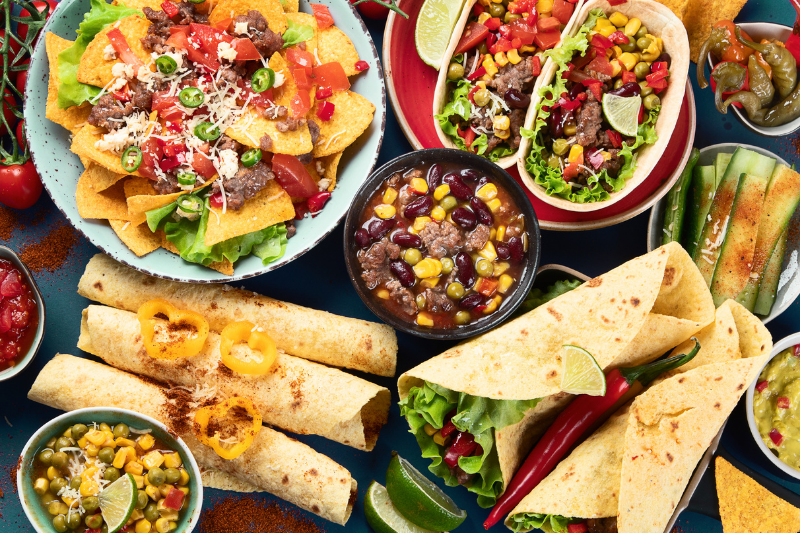
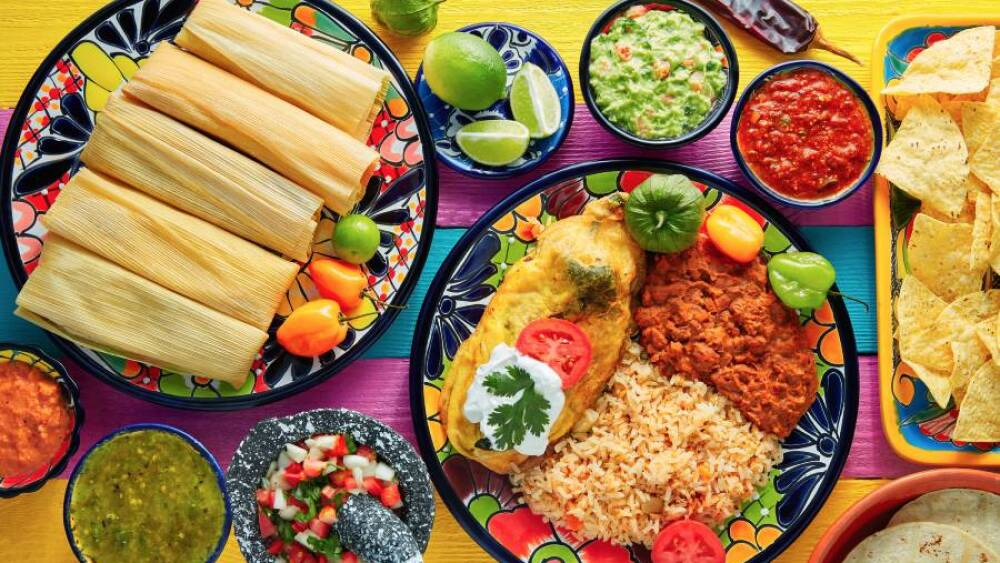
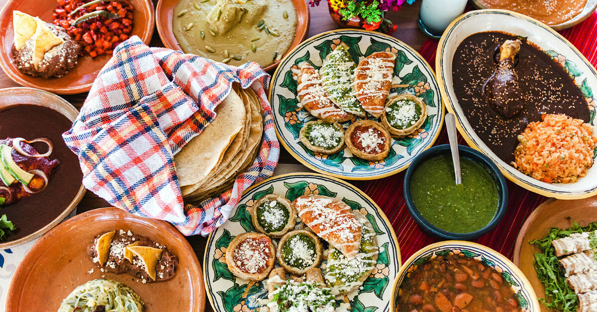
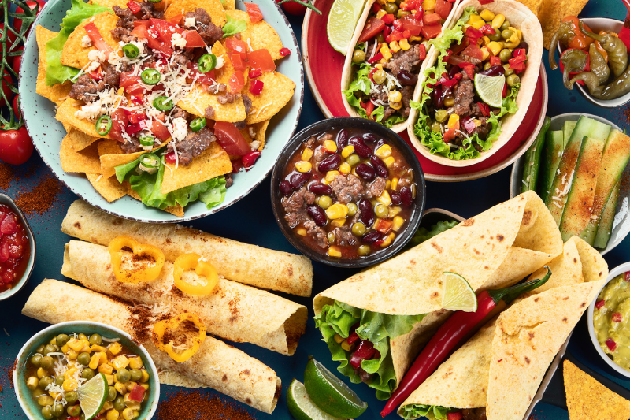
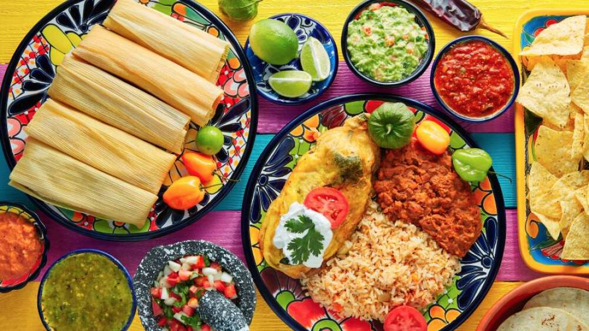
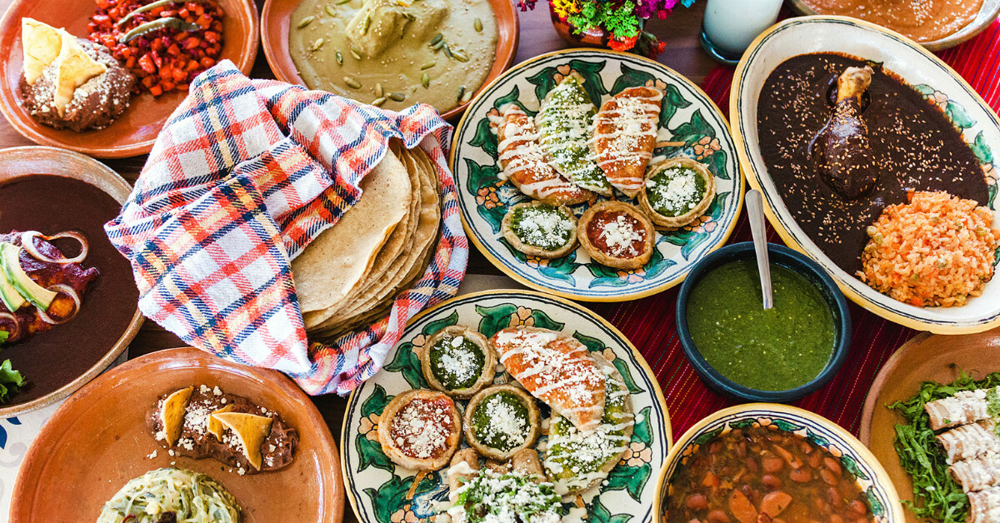

¡Bienvenidos al restaurante El Chile Verde!
El Chile Verde es más que un restaurante; es un rincón acogedor donde el sabor auténtico de la comida
mexicana se une con la calidez del hogar.
Ubicado en el corazón del barrio, este espacio fue diseñado pensando en
las familias que buscan una comida deliciosa, asequible y llena de tradición.
Los niños son más que bienvenidos: Hay menús diseñados para todas las edades. Para conocer nuestro menú, tenemos
una sección sobre nuestra Carta esperando a que le des click.
El servicio en El Chile Verde es cálido y cercano, como si fueras parte de la familia. Cada mesero conoce el menú
al dedillo y siempre está dispuesto a recomendarte la mejor combinación según tus antojos. Además, si tienes algún
antojo especial, no dudes en pedirlo; aquí la cocina está abierta a la creatividad y a satisfacer a cada cliente.
Para conocer a nuestra plantilla, puedes ir a la sección sobre nuestro Equipo.
Al cruzar sus puertas, te recibe el aroma inconfundible de la comida casera de siempre, al estilo mexicano.
Las paredes, decoradas con colores vivos y detalles típicos como nopales pintados a mano, tejidos artesanales y
frases mexicanas llenas de humor, reflejan la alegría de la cultura mexicana. Todo esto se acompaña del suave
fondo de música ranchera, mariachi o boleros, que crea el ambiente perfecto para compartir risas y buenos momentos
con tus seres queridos. Es por ello que somos el lugar de celebración de muchos cumpleaños y festividades. Infórmate
en nuestra pestaña Eventos.
En resumen, El Chile Verde es el lugar donde la tradición y la accesibilidad se encuentran para ofrecer una experiencia
única. Es el restaurante donde las familias se reúnen, los amigos celebran y los vecinos siempre tienen un lugar reservado.
No dudes en hacer tu reserva ahora, en nuestra pestaña Reserva.
En este video, te mostramos cómo preparamos con amor y dedicación los platillos que han conquistado a todas nuestras familias y amigos. Desde los ingredientes frescos y locales hasta las recetas auténticas, cada paso en nuestra cocina es una celebración de la cultura mexicana. Acompáñanos a ver cómo nuestros chefs dan vida a la comida casera mexicana, con ese toque especial que hace que cada plato sea único. Ya sea que te encanten los tacos, las enchiladas o nuestros sabrosos guisos, en El Chile Verde siempre encontrarás un plato lleno de sabor y tradición.
Ya sea que estés buscando un lugar donde disfrutar de una comida casera, celebrar una ocasión especial o simplemente pasar un buen rato con tus seres queridos, en El Chile Verde siempre serás bienvenido. Ven y forma parte de nuestra familia. ¡No lo pienses más y haz tu reserva hoy mismo!